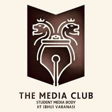
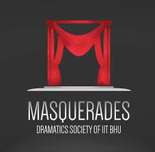
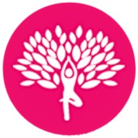

E-CELL IIT BHU (The Entrepreneurship Cell) supports entrepreneurship through resources, mentorship, networking, and events like workshops, competitions, and speaker sessions and fosters the overall startup ecosystem in the institute.
It is an institute body run by students devoted to acting as a link between budding entrepreneurs and the existing startup ecosystem. It is a hub where all startups can meet, collaborate and innovate.
It fosters entrepreneurial mindset, improves interpersonal skills and helps build network with startup ecosystem.
FILM AND MEDIA COUNCIL
The Film and Media Council of IIT (BHU) encompasses all the activities of film, media, and digital arts genres. It comprises six clubs, namely Design, Photography, Cinematography, Animation, Media, and Social Outreach. It is an amazing amalgamation of various clubs which serve as a learning area for freshers and all those who are interested in working behind the camera or have a passion for writing. FMC Weekend is the annual film and digital arts festival organized by the Film and Media Council. FMC Weekend is a first-of-its-kind festival in the country, providing a platform of national stature to college students across India to showcase their creative side, participate in various online and offline events, and increase their knowledge through the workshops and guest talks that are conducted during the FMC Weekend. In addition to the above, open-air movie screenings are organized every evening, which is the highlight of the three-day fest.
ANIMATION CLUB
The club provides a platform to those who wish to explore the world of animation. The club activities involve development of 3D models using various softwares, making of short animated films (both 2D and 3D). We deal with various softwares some of which are : 3ds max, Toon Boom Animate Pro, Adobe Flash, Premier Pro, boujou, After Effects.
CINE CLUB
The subtle science of filmmaking is not achievable without prolific imagination and a zeal of passion. We at Cine Club, IIT BHU provide a boat to the islands of this art. We tunnel the clubs' functioning and activities through various events. Cinematography, Screenwriting, Casting, Shooting, Sound recording, Production, and Editing are the aspects which are thoroughly studied during the clubs' overall walkthrough. Film Club takes interest in a variety of work ranging from short films, skits, sketches to documentaries.
PHOTOGRAPHY CLUB
The Photography Club is a crew of shutterbugs whose mission is to preach, practise and master the art of photography for the shared benefit of the self as well as the campus community. The club has its own studio with a vast variety of equipment and boasts a bevvy of breathtaking pictures. At the Photography Club, we hold interactive lecture series and workshops for the beginners followed by fun photo-walks in and out of Varanasi. To make the amateurs comfortable with DSLR handling, we give them hands-on experience through the coverage of the most glamorous events in the fests that are conducted in the campus.
MEDIA CLUB

Media Club provides coverage for all types of on and off campus activities and events. The Club is also responsible for promoting IITBHU locally and internationally using various media channels. The Club is mainly run by students as contributors of stories, photos, videos and newsworthy articles. Media Club provides students with the opportunity to express their ideas and talent through media, communication and journalism.
The main purpose of the Media Club is to give the opportunity to the students to be creative in media.
OUTREACH CLUB
The aim of the club is to enable the students to learn social responsibility. The club focuses of helping the neighbouring communities to transform themselves through programmes like literacy, health promotion, women empowerment, youth clubs and reduction of dropouts in schools. Special programmes/activities will be conducted to promote youth welfare, Women empowerment, Health sanitation and clean environment. The club also captures the highlights of the campus events.
GAMES AND SPORTS COUNCIL
Games and Sports Council is the voice and face of IIT Kanpur sports community, responsible for management and conduction of all sporting events in the campus. A legacy of a determined struggle and expression of selfless passion! Games and Sports Council, a p e Students’ Gymkhana is responsible for management and conduction of sporting events in the campus and to support the desires of everyone to pursue a sport of their choice. The council strives to promote the involvement and participation of the campus junta in sports. The council is a perfect reach for everybody, whether you want to play a sport for recreation or for representing the institute, or take part in the interesting club activities, or participate in the intensive workshops conducted throughout the year.
To develop the sports person in you, in whatever sport you feel like, all you need to do is put your sports gear on and reach the desired venue; our system is backed up by a set of highly professional coaches and sufficient logistics for everyone.
CULTURAL COUNCIL
The Cultural Council, IIT (BHU), is one of the oldest councils of the Gymkhana. Encompassing seven clubs, the Cultural Council organizes workshops, activities, and events like the Cultural Weekend. Kashiyatra, the annual socio-cultural festival of the Cultural Council, witnesses a footfall of over sixty thousand students from around two hundred colleges across the country. It celebrates music, dance, theatre, literature, quizzing, and fine arts through myriad competitions that draw huge participation. Kashiyatra has been associated with organizations like PETA and Kashi Utkarsh—a club of student volunteers of IIT (BHU)—to work against various social problems, with the intention of transforming the society into a better one. Kashiyatra also fulfils its social obligations through events like ‘Run for Cancer’—a marathon for spreading general awareness about cancer. Kashiyatra has been blessed to have received warm regards and best wishes from none other than the Prime Minister of India, Shri Narendra Modi.
WESTERN MUSIC CLUB
From brutal breakdowns to soothing melodies, we are the Western Music Club, IIT (BHU). Our objectives are to encourage talent in music- instrumental as well as vocal,
to help students retain and enhance their own, individual love of music and to
develop career in dancing profession those who have the passion for music.
INDIAN MUSIC CLUB
We, the Indian Music Club, popularly called IMC, are amongst the most active clubs of IIT BHU. We are a dedicated but musically diversified group of people who love to appreciate music from all the genres, some of them being Hindustani, Bollywood, Rock, Progressive, Blues, Metal and Rap. It encourages talent in Indian classical music- instrumental as well as vocal.
MASQUERADES CLUB

The Masquerades Club functions to keep alive the unique art of theatre and to convey its delight and force to youngsters. It helps youngsters experience the energy of theatrical expressions and seeks to instil emotional intelligence, social abilities, inclusive attitude, tolerance and the capacity for team work. The club organizes activities like theatre seminars, workshops, performance of plays and competitions. Competitions in one-act play, mime, skit and script writing are conducted by the club. Programmes in memory of great actors and playwrights are also organized by the club.
DANCE FREAKZ CLUB
We are one of the most active clubs of IIT BHU with the events well spread over the year. Our ambition is to be the most exciting, glamorous and breathtaking. Working on the principle: learn, teach and perform many beginners go on to become an integral part of the Dance Club and this art becomes an integral part of their life. We perform a variety of dance forms and we have been participating and winning in many inter-college festivals. Our club is a big one with over 100 members, our events are amongst the most awaited events and the audience turnout is always overwhelming.
FINE ARTS CLUB
The Fine Arts Club is a committed team of artists who strive to promote the various forms of fine art amongst the campus junta. At the Fine Arts Club, we believe that art lets us free ourselves and discover ourselves within. We work towards building a forum that fosters growth among the budding artists in the campus. The club persistently tries to lend out a hand to make a positive impact amongst the community, bringing out cognizance over the present-day social issues through our expertise in art.
QUIZ CLUB
We at the Quiz Club welcome all those with the pathological problem of knowing a lot of stuff and others too. The club aims to introduce the campus community to the joys of quizzing, question framing and if you’ve never answered questions that don’t pertain to academics, don’t worry, we’re here to teach you how to quiz and how to make a quiz too!
The Club has introduced many new quizzes for the campus community in order to enhance its reach and participation.
LIT CLUB
Being able to articulate one’s thoughts accurately is a skill that is hard to acquire but extremely valuable.
The Literature Society is a group of individuals passionate about exchanging ideas, discussing difficult topics, and of course, debating. We’d like to share this fun and worthwhile activity with the campus community.
SCIENCE AND TECHNOLOGY COUNCIL
Science and Technology Council, IIT (BHU) Varanasi encompasses all the clubs, technical teams and centres of IIT (BHU) Varanasi which cater to the technical interests of the students. In other words, it's the "geek hub" of the institute. From robotics and aeromodelling to astronomy and programming, the council offers a learning platform for all topics that intrigue science enthusiasts. The council aims at imparting technical knowledge to the students and allowing them to showcase their creativity and innovation in both national and international events. The council hosts the annual techno-management fest of the institute, Technex, which is a platform for the students to compete at a national level and demonstrate their technical brilliance.
CLUB OF PROGRAMMERS
Empower yourself with the knowledge and skills of a top-notch programmer through the Club of Programmers at IIT BHU. Our club is dedicated to fostering a passion for computer programming among students and providing opportunities for hands-on learning and engagement. From participating in coding competitions and projects, to learning from industry experts through guest lectures, to sharpening your skills through workshops, the Club of Programmers at IIT BHU is your ticket to the world of computer programming. Whether you are a seasoned programmer or just starting out, join us in our mission to push the boundaries of technology and revolutionize the world through code.
ROBOTICS CLUB
Our club is dedicated to empowering students with the knowledge and skills necessary to thrive in the rapidly-evolving field of robotics. Whether you are a seasoned robotics enthusiast or just starting out, you all will find a wealth of opportunities for learning and growth within our club. From participating in hands-on projects and workshops, to learning from industry experts through guest lectures, to competing in coding competitions, the Robotics Club at IIT BHU is your launchpad for a successful career in robotics.
CLUB OF AUTOMOTIVE ENGINEERS
Our club is dedicated to providing students with a deep understanding of engineering technology and design principles, and empowering them with the skills necessary to succeed in this exciting field. Whether you are a seasoned engineer or just starting out, you all will find a wealth of opportunities for learning and growth within our club. From participating in hands-on projects and workshops, to learning from industry experts through guest lectures, to competing in design competitions, the SAE Club at IIT BHU is your launchpad for a successful career in engineering.
AEROMODELLING CLUB
Unleash your potential in aeronautics and aerospace engineering with the Aero Club at IIT BHU. Learn through hands-on projects, workshops and expert talks. Explore the limitless possibilities of the field and develop your skills to new heights. The Aero Club provides a platform for students to tap into their potential and ignite their passion for this exciting field.
ASTRONOMY CLUB
Discover the mysteries of the cosmos with the Astro Club at IIT BHU. Our club is dedicated to fostering a love for astronomy and astrophysics among students, providing opportunities for hands-on learning and engagement. From observing the stars and celestial bodies through observation sessions, to gaining knowledge from industry experts during guest lectures, to participating in workshops and expanding your skills, the Astro Club at IIT BHU offers a unique and exciting journey through the universe. Explore the wonders of the cosmos and let your imagination soar to the stars.
BUSINESS CLUB
Empower yourself with the knowledge and skills to succeed in the business world through the Business Club at IIT BHU. Our club is dedicated to promoting an understanding of the business landscape and providing students with the tools necessary to succeed in the competitive and rapidly-changing world of business. From guest lectures by industry leaders to hands-on projects and workshops, students can gain a well-rounded understanding of the business world and develop the skills necessary to thrive in the workplace.Join us in our mission to equip the next generation of business leaders with the knowledge and skills necessary to succeed in the global marketplace.
STUDENTS COUNSELLING SERVICES
The Student Counselling Services (SCS), also known as “SAKHA”, is an Institute level faculty-student body at IIT(BHU). It consists of 10 faculty members and 200+ students primarily focused on the holistic development of 8000+ students on campus.
In order to tackle the diverse issues faced by the student community, SCS has 5 councils - wellness, academics, career, skill development and international exchange, with specialised verticals in public relations, publicity, and finance. SCS collaboratively works with the Institute Wellness Partner - YourDost, with a vast number of counsellors to facilitate the counselling needs of every student, from the comfort of their hostel dorms.
Over the span of four years, SCS has conducted 300+ events, with a content library of 250+ videos on its YouTube channel, and a lifetime watch time of 1M+ minutes with a subscriber base of 1.7K.
WELLNESS COUNCIL

The Wellness Council works to promote the mental, physical and emotional wellness of students under the aegis of the Student Counselling Services (SAKHA), IIT(BHU), by building habit communities and promoting values of mindfulness, gratitude, and forgiveness. In order to tackle the issues related to wellness faced by the student community, the Wellness Council has flagship initiatives like Life's Tiny Wins, Heart Out, Mental Health Awareness Week, 21-Days Habit Challenges, IITBHUREADS.
ACADEMIC COUNCIL
The Academics Council is an Institute level faculty-student body at IIT BHU. It consists of 2 Faculty Coordinators and 18+ students primarily focused on the holistic development of 8000+ students on campus.
The Academics Council works to help students of all years with the various academic problems that they face throughout their college life. In order to tackle these problems the Academics Council has flagship initiatives like Noteflix, discipline change sessions and remedial classes.
CAREER COUNCIL
We aim to provide step-by-step guidance for various career profiles, help you pick the profile you are interested in, and create a holy environment on our campus that enables every student to explore all suitable career paths. Everyone desires to possess knowledge of their interests and turn them into viable career options; each individual is unique and excels in specific fields. We assist in discovering those passions or building upon them.
INTERNATIONAL EXCHANGE COUNCIL
We aim to provide comprehensive assistance and support to students engaging in international internships or research, as well as foreign students visiting the campus. Understanding the significance of cultural, linguistic, and customs differences, the IE council strives to bridge the gap and facilitate a smooth transition for students.
SKILL DEVELOPMENT COUNCIL
We help students in their personality development by enabling them to explore their hobbies and interests. We aim to equip students with the necessary soft and hard skills that are required for different career opportunities and ace in life. Major flagship initiatives include Speak Up!, Exhort series, commando talks, bootcamps and a lot more.